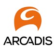
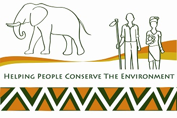
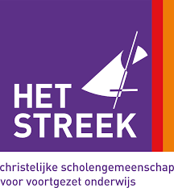
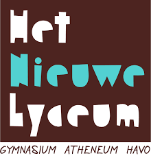
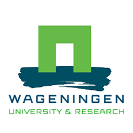
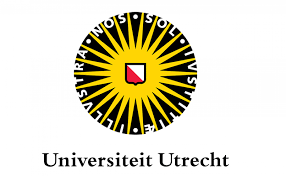
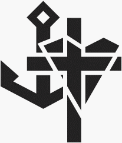
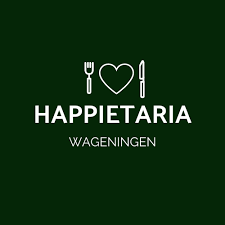

Curriculum Vitae
Werkervaring
Provincie Gelderland |
2021 - heden | |
|
Bij de provincie Gelderland heb ik aan een aantal projecten gewerkt: De 'ruimtelijke puzel' van de provincie Gelderland: als onderdeel van de vraag welke provincie we de komende decennia willen zijn, ben ik betrokken geweest bij het Ruimtelijk Voorstel van de provincie richting het Rijk. Hierbinnen hield ik me concreet bezig met de vraag wat het betekent als bodem en water sturend zijn bij onze provinciale ruimtelijke planvorming. Wat betekent water en bodem sturend voor de provincie? |
||
|  |
Arcadis Nederland - Afdeling bodemadvies |
September 2020 - Januari 2021 |
|
Afstudeerstage. Werkzaamheden bestonden uit werken in projectteams op onderwerpen als bodemsanering, GIS-applicaties voor bodemonderzoek en de Omgevingswet |
||
|  |
Foundation for Wildlife and Habitat Conservation |
2017 - heden |
|
Technisch adviseur en projectbegeleider |
||
|  |
Het Streek College |
Januari - Augustus 2021 |
|
Tijdens deze periode heb ik mijn eerstegraads lesbevoegdheid havo/vwo voor het vak aardrijkskunde behaald |
||
|  |
Het Nieuwe Lyceum |
2018 |
|
Tijdens deze periode heb ik mijn tweedegraads lesbevoegdheid havo/vwo voor het vak aardrijkskunde behaald |
||

|
Lyceo |
2017 - 2021 |
|
Examentrainer |
||
|  |
Wageningen University and Research |
2018-2020 |
|
Studentbegeleider |
||
Afgeronde opleidingen
|  |
Master Leraar voorbereidend Hoger Onderwijs voor het vak Aardrijkskunde - Universiteit Utrecht |
2021 |
|
Lesbevoegdheid voor de bovenbouw van havo en vwo aardrijkskunde |
||
Master International Land and Water Management - Wageningen University and Research |
2018 - 2021 | |
| Masterthesis: 'Using Sentinel-1 and field measurements to evaluate LISEM performance in Catsop, South Limburg' | ||
Bachelor International Land and Water Management - Wageningen University and Research |
2015 - 2018 | |
Nevenactiviteiten
|  |
Praeses van studentenvereniging C.S.F.R. Wageningen - Dei Gratia |
2019 - 2020 |
|
Werkzaamheden bestonden uit het geven van dagelijkse leiding aan bestuur en vereniging, eindverantwoordelijke voor genomen besluiten |
||
|  |
Bestuur Happietaria Wageningen |
2017 |
|
Happietaria is een pop-up restaurant dat geld ophaalt voor ontwikkelingsprojecten in ontwikkelingslanden. Het restaurant wordt volledig gerund door studenten. Werkzaamheden bestonden uit het opzetten van het restaurant, promotieactiviteiten, het coördineren van vrijwilligers en het operationeel houden van het restaurant. |
||